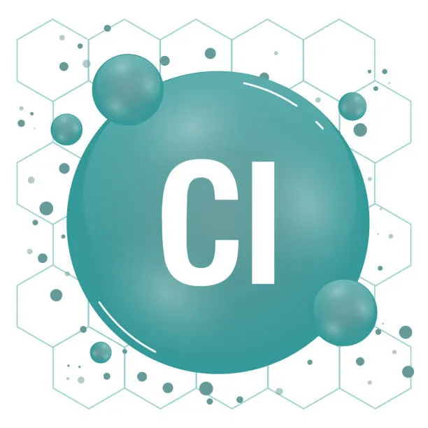

O sulfeto de cádmio de fórmula CdS é um composto químico inorgânico e semicondutor formado pelos elementos cádmio(Cd) e enxofre(S).
É uma ligação iônica com caráter covalente, possuindo forte atração eletrostática e compartilhamento parcial de elétrons.
Pode possuir estrutura cristalina cúbica(zincita) ou hexagonal(wurtzita).
Possui ponto de fusão igual a 1.750°C e ponto de ebulição igual a 980°C. É solúvel em ácido, mas muito pouco solúvel em hidróxido de amónio e insolúvel em água. Sua densidade aproximada é de 4,82 g/cm³
Ele pode ser encontrado na natureza nos minerais greenockita e hawleyita, e é um sólido de cor amarela, porém é mais prevalente como substituinte de impureza nos minérios de zinco esfalerita e wirtzita de estrutura semelhante que, por sua vez, são as principais fontes de cádmio.
Quiz
Quem descobriu o sulfeto de cádmio?
Você acertou! Muito bem!
Como em diversos outros compostos químicos, é difícil afirmar um único "descobridor", pois diversas pessoas estiveram envolvidas no processo. Porém tudo indica que foi Friedrich Stromeyer que o descobriu de fato enquanto investigava certas amostras de carbonato de zinco que ficavam amarelas.
Resposta errada, tente novamente.
Pode ter a condutividade aumentada por:
Outro acerto!? Temos um gênio aqui!?
Com a adição de certos elementos químicos como o Cloro(Cl), semicondutores podem ser "dopado" e, por consequência, ter sua condutividade aumentada.

Resposta errada, tente novamente.
É normalmente usado para:
Resposta certa!
O sulfeto de cádmio é um semicondutor com uma banda proibida(band gap) ideal para absorver e interagir com a luz visível.
Reposta errada, tente novamente.
Parabéns pela conquista!!!!!!